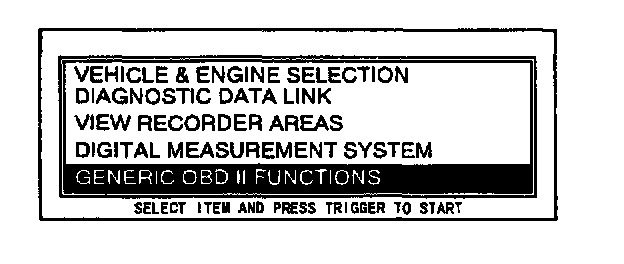
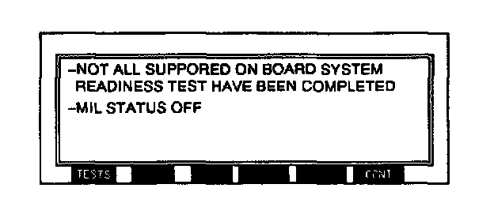
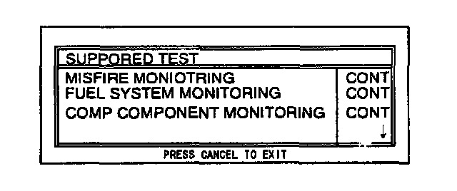
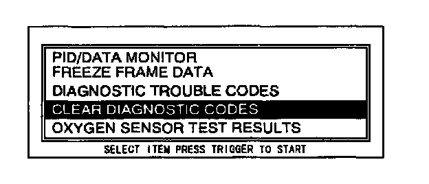
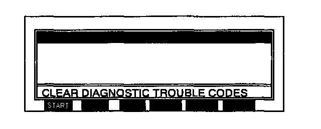

On-Board System Readiness Tests Access Procedure
NOTE:- This is a generic function.
1. Perform the NGS tester hook-up procedure.

2. Move the cursor to GENERIC OBD II FUNCTIONS. Press the trigger key to enter this selection.

3. Press TESTS.

4. Monitor the OBD-II systems operating status.
5. If each system's status initialization is necessary, use the following procedures:
1. Press the cancel key until you return to the main menu.
2. Move the cursor to GENERIC OBD II FUNCTIONS. Press the trigger key to enter this selection.
3. Press CONT.

4. Move the cursor to CLEAR DIAGNOSTIC CODES. Press trigger key to enter this selection.

5. Press START.